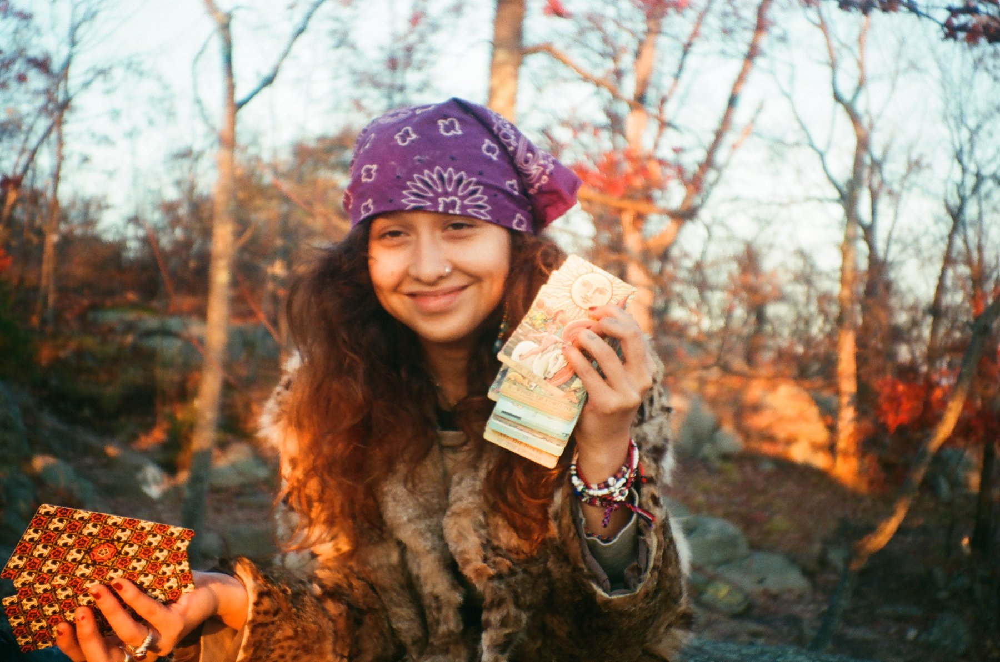

✷arte · cultura local · ritual
Azul Perenne
lo único permanente es el movimiento.
Tres corrientes
Un viaje para aprender de quienes habitan cada lugar. Lo que encuentro vuelve aquí.


Fotografía analógica
Imaginario
✶ ninguna fotografía ha sido editada ✶



Sobre Azul y quién está detrás
Soy Camila.
Fotografío, escribo y practico yoga. Ahora salgo a recorrer otros países para aprender de su gente y traer de vuelta lo que encuentre.
Perenne es lo que atraviesa los años.
Mi historia